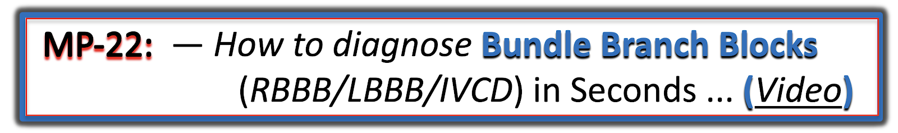

ECG Blog #282 — LBBB và Sgarbossa? LVH? Nhồi máu cơ tim?
Điện tâm đồ trong Hình-1 là của một người đàn ông 48 tuổi đến khám vì khó thở cấp.
- BẠN sẽ đọc bản ghi này như thế nào?
- Đã có nhồi máu cơ tim (MI) chưa? (Có thỏa tiêu chuẩn Sgarbossa không?).
- Có LVH không? (Bạn có nhận ra được khi QRS rộng không?).
=======================================
LƯU Ý #1: Đến đây, một số bạn đọc có thể muốn xem ECG Video PEARL dài 13 phút trước khi đọc Suy nghĩ của tôi về điện tâm đồ ở Hình-1. Bạn có thể xem lại Suy nghĩ của tôi về bản ghi này vào bất cứ lúc nào (nằm bên dưới ECG MP-22).
=======================================


ECG Media Pearl #22 (13:15 phút Video) hôm nay — Trình bày một cách tiếp cận dễ áp dụng giúp chẩn đoán các blốc nhánh (Bundle Branch Blocks) trong chưa đến 5 giây.
=======================================
- BẤM VÀO ĐÂY — để tải MIỄN PHÍ tệp PDF dài 26 trang này về BBB (trích từ ECG-2014-ePub của tôi) — ôn lại Kiến thức cơ bản về chẩn đoán điện tâm đồ các Blốc Nhánh (Bundle Branch Blocks) (bao gồm chẩn đoán MI cấp & LVH khi có BBB).
=======================================
Suy nghĩ của tôi về điện tâm đồ ở Hình-1:
Như thường lệ — tôi thích bắt đầu đánh giá bằng cách xem nhịp tim trước tiên. Cho rõ ràng — tôi đã đánh số các nhát bóp và ghi nhãn sóng P trên dải nhịp chuyển đạo II dài (Hình-2):
- Nhịp nói chung ở Hình-2 khá đều (dù không hoàn toàn đều) — với sóng P dương có khoảng PR hằng định (và bình thường) trên dải nhịp chuyển đạo II (mũi tên ĐỎ) này. Do đó — nhịp nền là nhịp xoang với tần số ~85/phút.
- Nhát #11 rộng, hình dạng rất khác và đến sớm. Nhát này không có sóng P nào đi trước. Nhát #11 là một PVC (ngoại tâm thu thất – Premature Ventricular Contraction).
ĐIỂM THEN CHỐT (PEARL) #1: BẠN có để ý rằng không có sóng P nào trước nhát #12 không?
- Vì hình dạng QRS của nhát #12 giống hệt hình dạng QRS của các nhát xoang khác trên dải nhịp chuyển đạo II dài này — điều đó xác định nhát #12 là một nhát bộ nối. Sau đó nhịp xoang bình thường trở lại từ nhát #13.
- LƯU Ý: Tôi hoàn toàn thừa nhận rằng việc nhát #12 là nhát bộ nối (chứ không phải nhát xoang) — không hề ảnh hưởng tới xử trí bệnh nhân này. Ý tôi chỉ đơn giản là nhấn mạnh rằng cách TỐT NHẤT để không bỏ sót những bất thường tinh tế của nhịp tim là thường quy dành 3-đến-5 giây đầu tiên của việc đánh giá để xem xét cẩn thận từng nhát trên dải nhịp chuyển đạo dài. Chỉ cần nhìn 3-đến-5 giây — đi từng nhát một trên dải nhịp chuyển đạo II dài, đánh giá hoạt động nhĩ. Theo kinh nghiệm của tôi — những người không làm điều này thường bỏ sót các dấu hiệu bất thường của nhịp mà đôi khi thực sự tạo ra khác biệt rõ ràng trong quá trình xử trí.
Tiếp tục với Cách tiếp cận Hệ thống của tôi:
Sau khi đánh giá Tần số (Rate) và Nhịp (Rhythm) — tôi thích xem tiếp các Khoảng (Intervals):
- Như đã nêu — khoảng PR hằng định trước các nhát xoang, và thời gian bình thường (tôi đo được ~0.16 giây).
- Phức bộ QRS rộng (tức là rõ ràng hơn nửa ô lớn). Thời gian của một khoảng được xác định bằng cách chọn chuyển đạo mà ở đó có thể thấy rõ điểm bắt đầu và điểm kết thúc của khoảng — và ở đó khoảng dài nhất. Tôi đo thời gian QRS được ~3.5 ô nhỏ ở một số chuyển đạo trước tim = ít nhất 0.14 giây.
ĐIỂM THEN CHỐT (PEARL) #2: Có nhiều "hệ thống" khác nhau để đọc điện tâm đồ 12 chuyển đạo. Dù vậy — Bất kể bạn ưa dùng hệ thống nào (của tôi hay bất kỳ hệ thống nào khác) — điều cốt yếu là phải xem các Khoảng ở giai đoạn sớm của quy trình! Lý do — là các tiêu chuẩn về Trục, Lớn các buồng tim và Thiếu máu cục bộ/Nhồi máu đều thay đổi khi phức bộ QRS bị giãn rộng do BBB (blốc nhánh – Bundle Branch Block) hoặc IVCD (chậm dẫn truyền trong thất – IntraVentricular Conduction Defect).
- Trước hết, xác định rằng bệnh nhân ổn định huyết động và không ở trong VT (nhịp nhanh thất – Ventricular Tachycardia). Sau khi đã làm vậy — NẾU nhịp là nhịp trên thất, nhưng phức bộ QRS rộng (như ở Hình-2) — thì hãy DỪNG LẠI! Trước khi đi tiếp — Hãy xác định TẠI SAO phức bộ QRS rộng!
- Trong ECG Video Pearl (ECG-MP-22 — ở trên) hôm nay — tôi trình bày cách tiếp cận dễ áp dụng của mình để xác định nguyên nhân của rối loạn dẫn truyền, dù đó là RBBB (blốc nhánh phải – Right Bundle Branch Block) — LBBB (blốc nhánh trái – Left Bundle Branch Block) — hay IVCD. Chỉ cần luyện tập một chút — Bạn có thể xác định rối loạn dẫn truyền là RBBB, LBBB hay IVCD trong chưa đến 5 giây!
- LƯU Ý: Ngoài ECG Video dài 13 phút hôm nay — cách tiếp cận dễ áp dụng này đối với các BBB còn được trình bày trong tệp PDF tải về (trích từ ECG-2014-ePub của tôi) này.
HÃY NHÌN LẠI điện tâm đồ 12 chuyển đạo của ca hôm nay (Hình-3):
- Chúng ta đã xác định rằng nhịp nền là nhịp xoang với một PVC và một nhát bộ nối sau PVC — tiếp theo là nhịp xoang trở lại.
- TẠI SAO phức bộ QRS rộng ở Hình-3?
TRẢ LỜI:
Lý do phức bộ QRS rộng ở Hình-3 là có LBBB.
- Có sóng R một pha ở các chuyển đạo I và aVL phía bên trái.
- Với LBBB điển hình — thường cũng thấy một sóng R dương hoàn toàn tương tự ở chuyển đạo V6 phía bên trái — trừ khi có LVH (phì đại thất trái – Left Ventricular Hypertrophy) đáng kể. Khi thất trái to ra — vectơ hoạt động của thất trái không chỉ dịch sang trái, mà còn ra sau. Kết quả là — với LBBB, đôi khi không thấy sóng R một pha cho đến khi xem các chuyển đạo đặt ra phía sau hơn (như V7, V8 hoặc V9). Đó là trường hợp của bản ghi hôm nay.
- Tiêu chuẩn điện tâm đồ còn lại của LBBB (cũng được thỏa ở Hình-3) — là có các phức bộ QRS hoàn toàn âm hoặc gần như hoàn toàn âm ở các chuyển đạo phía trước.
ĐIỂM THEN CHỐT (PEARL) #3: Hầu như mọi bệnh nhân có LBBB đều có bệnh tim nền. Ở những bệnh nhân này, nếu có tăng huyết áp lâu năm, bệnh cơ tim hoặc suy tim và LBBB — tỷ lệ LVH là ít nhất 80% ngay cả trước khi nhìn vào điện tâm đồ.
- Xác suất một bệnh nhân có LBBB bị LVH tăng lên >90% — NẾU cùng với LBBB có sóng S rất sâu (≥25-30 mm) ở V1, V2 hoặc V3. Đây chính xác là điều chúng ta thấy trên bản ghi hôm nay — trong đó sóng S ở các chuyển đạo V1, V2 và V3 đo được lần lượt 19, 32 và 20 mm (các phức bộ tô màu XANH DƯƠNG, ĐỎ và VÀNG ở Hình-3).
CÂU HỎI:
- Đã có MI chưa? (Có thỏa tiêu chuẩn Sgarbossa không?).
TRẢ LỜI:
Như đã nhấn mạnh ở trên trong ECG Video Pearl (ECG-MP-22) hôm nay, và trong tệp PDF tải về đi kèm — chẩn đoán thiếu máu cục bộ/nhồi máu luôn khó hơn khi có BBB nền.
- Ví dụ — ST-T chênh xuống thấy ở các chuyển đạo I và aVL bên cao là điều có thể dự đoán với LBBB.
- Không có ST chênh lên nguyên phát trên bản ghi hôm nay (như đã thấy chẳng hạn trong ECG Blog #146 — và trong Blog #162).
ĐIỂM THEN CHỐT (PEARL) #4: Khi không có thay đổi ST-T cấp rõ ràng ở bệnh nhân LBBB — sử dụng Tiêu chuẩn Sgarbossa Cải biên theo Smith (Smith-Modified Sgarbossa Criteria) có thể giúp xác định XEM có bất tương hợp quá mức (excessive discordance) đủ để chẩn đoán khả năng tắc mạch vành cấp hay không.
- NẾU điểm J của đoạn ST chênh lên hoặc chênh xuống ≥25% biên độ QRS — thì tiêu chuẩn bất tương hợp quá mức được thỏa.
- CẢNH BÁO — Có thể khó biết điểm J nằm ở đâu nếu ST chênh lên ở chuyển đạo trước tim với LBBB có đường nét trơn láng (khi đó bạn sẽ không dùng được tiêu chuẩn này).
- Tôi đã ghi nhãn bản ghi hôm nay ở Hình-4 — để minh họa cách áp dụng Tiêu chuẩn Sgarbossa Cải biên theo Smith. ST chênh lên rất ít ở các chuyển đạo V1 và V3 của Hình-4. Tuy nhiên, ST chênh lên đáng kể ở chuyển đạo V2. Mũi tên XANH DƯƠNG trong hình chỉ chỗ đổi độ dốc mà tôi coi là điểm J ở chuyển đạo V2. Do đó, mức ST chênh lên tại điểm J là 5 mm. Mặc dù sự chồng lấn giữa các chuyển đạo làm khó đánh giá độ sâu sóng S — đường viền ĐỎ của phức bộ QRS ở chuyển đạo V2 cho thấy sóng S đo được 32 mm.
- ĐIỀU CỐT LÕI: Mặc dù mức ST chênh lên tại điểm J ở chuyển đạo V2 là đáng kể (tức là 5 mm) — do có LVH rõ rệt, sóng S cực sâu ở chuyển đạo này (32 mm) cho ta tỷ lệ 5/32 — rõ ràng nhỏ hơn 25%, vì vậy tiêu chuẩn Smith-Sgarbossa không được thỏa.
ĐIỂM THEN CHỐT (PEARL) #5: Như đã bàn nhiều lần trên blog này — dấu hiệu điện tâm đồ "Phân mảnh" (fragmentation) có thể cho nhiều thông tin (Xem ECG Blog #165). "Phân mảnh" ở đây ý tôi là những bất thường không mong đợi trong hình dạng QRS, như khía hoặc trát đậm các sóng (như được đánh dấu bằng các vạch VÀNG ngắn, nghiêng ở không dưới 6 chuyển đạo trong Hình-4).
- Phân mảnh gợi ý sẹo — có thể là hậu quả của nhồi máu cũ, bệnh cơ tim, hoặc một dạng bệnh tim cấu trúc khác.
- Phân mảnh như vậy không cho biết bệnh tim là cấp hay đã có từ lâu — nhưng dù sao nó vẫn là một manh mối vô giá cho thấy bệnh nhân đang xét gần như chắc chắn có một dạng bệnh tim cấu trúc nền nào đó.
Cuối cùng — sóng Q ở chuyển đạo V4 và V5 của Hình-4 kỳ dị và không mong đợi. Đây rõ ràng không phải hình ảnh thường gặp của LBBB điển hình — trong đó các chuyển đạo trước tim thường thấy ưu thế âm dưới dạng phức bộ QS hoặc rS không có thành phần ba pha, cho đến khi vùng chuyển tiếp sang ưu thế dương xuất hiện ở các chuyển đạo trước tim bên.
KẾT LUẬN: Điện tâm đồ của ca hôm nay cho thấy nhịp xoang với một PVC. Có LBBB hoàn toàn kèm LVH rõ rệt.
- Bệnh nhân này gần như chắc chắn có bệnh tim nền nặng — như gợi ý bởi sự kết hợp của LBBB, LVH rõ rệt + phân mảnh ở nhiều chuyển đạo + các phức bộ QRS ba pha kỳ dị ở chuyển đạo V4 và V5, mà trong bối cảnh LBBB nhiều khả năng là tương đương sóng Q. Khả năng cao là đã có một hoặc nhiều lần nhồi máu trước đây.
- Mặc dù có bất thường ST-T không đặc hiệu ở nhiều chuyển đạo — nhiều khả năng đây là hậu quả của rối loạn dẫn truyền, "tăng gánh" thất trái (LV "strain") và bệnh mạch vành nền. Dù chúng ta không thể loại trừ khả năng troponin có tăng phần nào — không có bằng chứng điện tâm đồ xác định về tắc mạch vành cấp trên bản ghi duy nhất này. Tiêu chuẩn Sgarbossa Cải biên theo Smith âm tính.
===============================
T.B. (P.S.) = PHẦN BỔ SUNG (ngày 9 tháng 3 năm 2024):
Khoảng 2 năm sau khi đăng ca này lần đầu trong ECG Blog #282 — hôm nay tôi có dịp xem lại những gì mình đã viết lúc đó. Nhìn lại ca này hôm nay — tôi muốn sửa lại những gì tôi đã nói năm 2022 như sau:
- Người đàn ông 48 tuổi được trình bày trong Blog #282 bị "khó thở cấp". Tôi không được cung cấp thêm chi tiết bệnh sử. Tôi không thấy dấu hiệu nào cho thấy đã ghi lại điện tâm đồ. Ở bệnh nhân có triệu chứng cấp (tức là khó thở trong ca này) — cho đến khi bạn có thể tự tin hoặc là khẳng định, hoặc là loại trừ một biến cố cấp — cần ghi một hoặc nhiều điện tâm đồ lặp lại. Đó là vì sự xuất hiện của thay đổi điện tâm đồ "động" ở bệnh nhân có triệu chứng cấp có thể là bằng chứng mạnh ủng hộ rằng một biến cố cấp thực sự có thể đang tiến triển.
- Trong một biến cố cấp — các thay đổi ST-T tiến triển đôi khi xuất hiện rất nhanh (tức là đôi khi chỉ trong vài phút!). Vì vậy — bản ghi lặp lại lần thứ 1 nên được thực hiện trong vòng ~15-20 phút, để xem ST-T có thay đổi trong khoảng thời gian đó không. Có vẻ điều này đã không được làm trong ca này.
- So sánh với một điện tâm đồ trước đây (nền) của bệnh nhân có thể đã cho nhiều thông tin. Điều này có vẻ cũng đã không được làm.
-
- Mặc dù ST chênh lên nguyên phát và tiêu chuẩn Sgarbossa Cải biên theo Smith đều âm tính ở ca hôm nay — hình ảnh ST-T ở các chuyển đạo V4,V5,V6 không phải là điều người ta thường mong đợi khi có LBBB vì: i) Ngoài sự phân mảnh QRS rõ rệt ở chuyển đạo V4 của Hình-1 — còn có ST thẳng đuỗn bất thường ở chuyển đạo này; và, ii) Có ST thẳng đuỗn dạng bậc thềm (shelf-like) kèm chênh xuống nhẹ ở chuyển đạo V5,V6.
- XIN NHẤN MẠNH: Dù các dấu hiệu ST-T nêu trên ở chuyển đạo V4,V5,V6 của Hình-1 không có giá trị chẩn đoán — chúng không phải là dấu hiệu "bình thường" khi có LBBB. Vì vậy — cần có thêm các biện pháp để chắc chắn hơn liệu các dấu hiệu ST-T mà tôi ghi nhận hồi cứu này có thể là biểu hiện của một biến cố cấp hay không (tức là Lẽ ra nên ghi lặp lại nhiều điện tâm đồ để tìm thay đổi "động" — tìm một điện tâm đồ trước đây của bệnh nhân để so với điện tâm đồ ban đầu này — và xét nghiệm troponin nhiều lần).
- Ước gì tôi có thêm thông tin diễn tiến về ca này ...
=======================
Lời cảm ơn: Xin cảm ơn Abdullah Al Mamum (từ Dhaka, Bangladesh) đã chia sẻ ca bệnh và bản ghi này.
=======================
=============================
Các LIÊN KẾT liên quan đến Ca hôm nay :
=============================
Các bài ECG Blog liên quan đến Bài hôm nay:
- Xem ECG Blog #185 — để ôn lại Cách tiếp cận Ps, Qs, 3R Hệ thống để Đọc Nhịp.
- ECG Blog #205 — Trình bày Cách tiếp cận Hệ thống của tôi để đọc điện tâm đồ 12 chuyển đạo.
- ECG Blog #93 — Trình bày ở mức cơ bản hơn cách tiếp cận của tôi để Đọc Điện tâm đồ Hệ thống.
- ECG Blog #198 — Một WCT không đều (LBBB hay IVCD).
- ECG Blog #162 — LBBB kèm STEMI rõ ràng.
- ECG Blog #146 — LBBB kèm thay đổi ST-T cấp.
- ECG Blog #204 — Đánh giá nhịp xoang và QRS rộng (do IVCD).
- ECG Blog #165 — Cách "định tuổi" một nhồi máu — Đánh giá khả năng phình thất trái (LV Aneurysm) — và — giá trị chẩn đoán của việc nhận ra "Phân mảnh".
- ECG Blog #145 — RBBB kèm thiếu máu cục bộ dưới nội tâm mạc lan tỏa.
- ECG Blog #144 — Blốc AV và BBB luân phiên.
- ECG Blog #140 — Nhịp đôi nhĩ kèm dẫn truyền lệch hướng RBBB/LAHB-LPHB luân phiên.
- ECG Blog #135 — WCT đều trông giống VT phân nhánh (nhưng không phải!).
- ECG Blog #130 — Blốc độ 2 kèm BBB luân phiên (LBBB-RBBB).
- ECG Blog #122 — Blốc hai phân nhánh ở một trẻ bị bệnh tim bẩm sinh.
- Bài ngày 31 tháng 1 năm 2022 trên Dr. Smith's ECG Blog — Trình bày các dấu hiệu tinh tế của OMI cấp ở bệnh nhân có LBBB (Xin xem Bình luận của tôi ở cuối trang).
- Bài ngày 25 tháng 6 năm 2020 trên Dr. Smith’s ECG Blog — trong đó tôi trình bày một ca nhịp xoang kèm RBBB từng lúc.